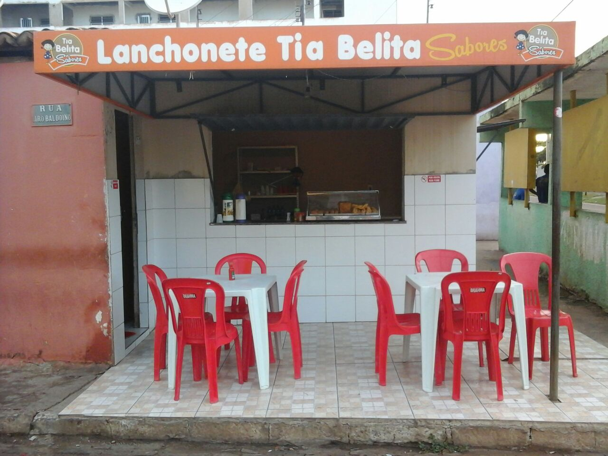

Informações
Av. Senador Helvídio Nunes, Picos-PI: 99061238
Informações
Av. Senador Helvídio Nunes, Picos-PI: 99061238
Quem somos
Nesta página está a história da Lanchonete da Tia Belita Sabores, com seus funcionários...
História...
- 
- A lanchonete Tia Belita Sabores, foi fundada em 19 de abril de 2013,
localizada na Av. Senador Helvídio Nunes 4207, bairro Junco, próximo a Loja Acredinorte. Com o passar do tempo, temos orgulho de
informar que desde a primeira coxinha até os dias de hoje, o nosso padrão de qualidade continua sendo o mesmo, pois é um dos seus
principais objetivos, além de fornecer serviços tendo em vista o melhor atendimento possível aos clientes e amigos.
Considerando-o nosso cliente e amigo, convidamos você para conhecer e poder usufruir de nossa amizade e comprovar nossa qualidade de prestação de serviços.
Estamos lhe esperando!
Funcionários...
- Os funcionários, são apenas dois, os quais se encontram na foto acima. A famosa Belita da qual surgiu o nome da lanchonete, por ser uma tia para a vizinhança em geral, é a principal funcionária por ter um vasto conhecimento sobre culinária, é quem prepara os lanches para a venda com amor e qualidade. E o Lucas, o funcionário secundário, na qual sua principal função é vender os lanches na lanchonete.
Copyright © 2014 - Todos os Direitos Reservados | Tia Belita Sabores